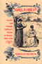
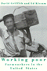

Browse
other Author lists:
A B C
D E F
G H I
J K L
M N O
P Q R
S T U
V W X
Y Z |

|
Tutoring Matters
Everything You Always Wanted to Know about How to Tutor
Second Edition
Chin, Tiffani, Jerome Rabow and Jeimee Estrada
240 pp • 5.5x8.25 • Fall 2011
paper 978-1-4399-0741-2
cloth 978-1-4399-0740-5
|
 |
Community
Builders
A Tale of Neighborhood Mobilization in Two Cities
Rabrenovic,
Gordana
248 pp • 6x9 • Spring 1996
paper 978-1-56639-410-9
cloth 978-1-56639-409-3
|
 |
The
Elements of Moral Philosophy
Rachels,
James
250 pp • Fall 1985
cloth 978-0-87722-405-1 |
 |
Women's
Activism in Contemporary Russia
Racioppi,
Linda and Katherine O'Sullivan See
277 pp • 5.5x8.25 • Spring 1997
paper 978-1-56639-521-2
cloth 978-1-56639-520-5 |
 |
Facing
The Death Penalty
Essays on a Cruel and Unusual Punishment
edited
by Radelet, Michael L., foreword by Henry Schwarzschild
264 pp • Spring 1989
paper 978-0-87722-721-2
cloth 978-0-87722-611-6 |
 |
Discrepant
Histories
Translocal Essays on Filipino Cultures
edited
by Rafael, Vicente L.
360 pp • 6x9 • Spring 1995
paper 978-1-56639-356-0
cloth 978-1-56639-355-3 |

|
M�sica Norte�a
Mexican Migrants Creating a Nation Between Nations
Ragland, Cathy
268 pp • 6x9 • Spring 2009
paper 978-1-59213-747-3
cloth 978-1-59213-746-6
|
 |
Covering
Accident Costs
Insurance, Liability, and Tort Reforms
Rahdert,
Mark C.
264 pp • 6x9 • Fall 1994
paper 978-1-56639-233-4
cloth 978-1-56639-232-7 |

|
James Naismith
The Man Who Invented Basketball
Rains, Rob with Hellen Carpenter
216 pp • 5.5x8.25 • Fall 2009
paper 978-1-4399-0134-2
cloth 978-1-4399-0133-5
|
 |
Marx
on Religion
edited
by Raines, John
256 pp • 6x9 • Spring 2002
paper 978-1-56639-940-1
cloth 978-1-56639-939-5
|

|
Selling Transracial Adoption
Families, Markets, and the Color Line
Raleigh, Elizabeth
274 pp • 6x9 • Fall 2017
paper 978-1-4399-1478-6
cloth 978-1-4399-1477-9
|
|
National
Lawyers Guild
From Roosevelt through Reagan
edited
by Ginger, Ann Fagan and Eugene M. Tobin, foreword by Clark
Ramsey
344 pp • Fall 1987
cloth 978-0-87722-488-4 |
|
The
Nights of Labor
The Workers' Dream in Nineteenth-Century France
Ranci�re,
Jacques, translated by John Drury, introduction by Donald Reid
448 pp • Fall 1989
paper 978-0-87722-833-2
cloth 978-0-87722-625-3 |
 |
Political
Parties and Elections in the United States
Marti,
Jose, edited by Philip S. Foner, translated by Elinor Randall
208 pp • Fall 1988
cloth 978-0-87722-604-8 |
|
Global
Decisions, Local Collisions
Urban Life in the New World Order
Ranney,
David
272 pp • 7x10 • Fall 2002
paper 978-1-59213-001-6
cloth 978-1-59213-000-9
|
 |
The
Roots of Community Organizing, 1917-1939
Betten,
Neil and Michael J. Austin, contributions by Robert Fisher,
William E. Hershey, Raymond A. Hohl and Marc Lee Raphael
230 pp • 5.5x8.25 • Fall 1989
cloth 978-0-87722-662-8
|
 |
Catholic
Social Teaching and Economic Theory
Paradigms in Conflict
Hobgood,
Mary E., foreword by Larry L. Rasmussen
256 pp • Fall 1990
cloth 978-0-87722-754-0 |
 |
Larry
Kane's Philadelphia
Kane,
Larry, foreword by Dan Rather
280 pp • 6x9 • Fall 2000
paper 978-1-56639-961-6
cloth 978-1-56639-806-0
|
 |
Equal
Employment Policy for Women
Strategies for Implementation in the United States, Canada, and
Western Europe
Ratner,
Ronnie Steinberg
Fall 1979
cloth 978-0-87722-156-2 |
|
The
Migrant's Table
Meals and Memories in Bengali-American Households
Ray,
Krishnendu
256 pp • 6x9 • Fall 2004
paper 978-1-59213-096-2
cloth 978-1-59213-095-5
|
 |
Rebuilding Community after Katrina
Transformative Education in the New Orleans Planning Initiative
edited by Reardon, Ken and John Forester
296 pp • 6x9 • Fall 2015
paper 978-1-4399-1100-6
cloth 978-1-4399-1099-3 |
 |
Consuming Catastrophe
Mass Culture in America's Decade of Disaster
Recuber, Timothy
228 pp • 5.5x8.25 • Fall 2016
paper 978-1-4399-1370-3
cloth 978-1-4399-1369-7 |
 |
Fashioning Diaspora
Beauty, Femininity, and South Asian American Culture
Reddy, Vanita
280 pp • 6x9 • Spring 2016
paper 978-1-4399-1155-6
cloth 978-1-4399-1154-9
|
 |
Studies
in Philosophy for Children
Harry Stottlemeier's Discovery
edited
by Sharp, Ann Margaret and Ronald F. Reed
268 pp • Fall 1991
paper 978-0-87722-873-8
cloth 978-0-87722-872-1 |
|
Knowledge,
Structure, and Use
Implications for Synthesis and Interpretation
edited
by Ward, Spencer A. and Linda J. Reed
Fall 1988
cloth 978-0-87722-331-3 |
 |
Health
Care Ethics
An Introduction
edited
by VanDeVeer, Donald and Tom Regan
Fall 1986
paper 978-0-87722-441-9 |
 |
Animal
Sacrifices
Religious Perspectives on the Use of Animals in Science
edited
by Regan, Tom, introduction by John Bowker
288 pp • Spring 1986
paper 978-0-87722-511-9
cloth 978-0-87722-411-2 |
|
The
Early Essays
edited
by Regan, Tom
248 pp • 6x9 • Fall 1986
cloth 978-0-87722-442-6
|
 |
The
Thee Generation
Reflections on the Coming Revolution
Regan,
Tom
176 pp • Fall 1990
paper 978-0-87722-772-4
cloth 978-0-87722-758-8 |
 |
The
Moral Philosophy of G. E. Moore
Sylvester,
Robert Peter, edited by Ray Perkins, Jr. and R. W. Sleeper,
foreword by Tom Regan
240 pp • Spring 1990
cloth 978-0-87722-645-1 |
 |
Elements
of Ethics
Moore,
G. E., edited by Tom Regan
272 pp • 6x9 • Fall 1991
paper 978-1-59213-194-5
cloth 978-0-87722-770-0
|
|
The
Nights of Labor
The Workers' Dream in Nineteenth-Century France
Ranci�re,
Jacques, translated by John Drury, introduction by Donald Reid
448 pp • Fall 1989
paper 978-0-87722-833-2
cloth 978-0-87722-625-3 |
 |
Cocaine
Changes
The Experience of Using and Quitting
Waldorf,
Dan, Craig Reinarman and Sheigla Murphy
336 pp • 5.5x8.25 • Fall 1991
paper 978-1-56639-013-2
cloth 978-0-87722-863-9 |
 |
Comparable
Worth and Wage Discrimination
Technical Possibilities and Political Realities
Remick,
Helen
320 pp • Spring 1984
paper 978-0-87722-385-6
cloth 978-0-87722-345-0 |
 |
The
Philadelphia Area Weather Book
Nese,
Jon and Glenn "Hurricane" Schwartz, foreword by Edward G. Rendell
264 pp • 8.375x10 • Spring 2005
paper 978-1-59213-391-8
cloth 978-1-56639-956-2
|
 |
A
Century of Philadelphia Sports
Westcott,
Rich, foreword by Edward G. Rendell
400 pp • 7x10 • Spring 2001
cloth 978-1-56639-861-9
|
 |
Waiting
on Washington
Central American Workers in the Nation's Capital
Repak,
Terry A.
272 pp • 5.5x8.25 • Spring 1995
paper 978-1-56639-302-7
cloth 978-1-56639-301-0 |
 |
Job
Queues, Gender Queues
Explaining Women's Inroads into Male Occupations
Reskin,
Barbara F. and Patricia A. Roos
388 pp • 6x9 • Fall 1990
paper 978-0-87722-744-1
cloth 978-0-87722-743-4
|
|
Change
from Within
Humanizing Social Welfare Organizations
edited
by Resnick, Herman and Rino J. Patti, foreword by Ronald Lippitt
350 pp • Spring 1980
paper 978-0-87722-200-2
cloth 978-0-87722-173-9 |
 |
An
Indian in White America
Monroe,
Mark, edited by Carolyn Reyer, afterword by Kenneth Lincoln
256 pp • 6x9 • Fall 1994
paper 978-1-56639-235-8
cloth 978-1-56639-234-1 |
 |
Songs
of the Caged, Songs of the Free
Music and the Vietnamese Refugee Experience
Reyes,
Adelaida
248 pp • 5.5x8.25 • Spring 1999
paper 978-1-56639-686-8
cloth 978-1-56639-685-1
|

|
Girls
Only?
Gender and Popular Children's Fiction in Britain, 1880-1910
Reynolds,
Kimberly
208 pp • Fall 1990
cloth 978-0-87722-737-3 |
|
The
Old Christian Right
The Protestant Far Right from the Depression to the Cold War
Ribuffo,
Leo
388 pp • Spring 1983
paper 978-0-87722-598-0
cloth 978-0-87722-297-2 |
 |
Philadelphia
Murals and the Stories They Tell
Rice,
Robin, Jane Golden and Monica Yant Kinney, photographs by David Graham
and Jack Ramsdale
160 pp • 9x11 • Fall 2002
cloth 978-1-56639-951-7
|

|
More
Philadelphia Murals and the Stories They Tell
Rice, Robin, Jane Golden and Natalie Pompilio, photographs
by David Graham and Jack Ramsdale
160 pp • 9x11 • Fall 2006
cloth 978-1-59213-527-1
|

|
African
American Perspectives on Political Science
Rich, Wilber C., foreword by Charles V. Hamilton
456 pp • 6x9 • Fall 2006
paper 978-1-59213-109-9
cloth 978-1-59213-108-2
|
 |
Social
Service Politics in the United States and Britain
Richan,
Willard C.
290 pp • Spring 1981
cloth 978-0-87722-216-3 |
|
The Redskins Encyclopedia
Richman, Michael, foreword by Dexter Manley
432 pp • 8.315x10.875 • Fall 2007
cloth 978-1-59213-542-4
|
|
Humility
Richards,
Norvin
240 pp • 6x9 • Fall 1992
cloth 978-0-87722-927-8 |
 |
Borscht
Belt Bungalows
Memories of Catskill Summers
Richman,
Irwin
256 pp • 7x10 • Fall 1997
paper 978-1-59213-190-7
cloth 978-1-56639-585-4
|

|
Campaign Advertising and American Democracy
Franz, Michael M., Paul B. Freedman, Kenneth M. Goldstein and Travis N. Ridout
216 pp • 6x9 • Fall 2007
paper 978-1-59213-456-4
cloth 978-1-59213-455-7
|
|
The Persuasive Power of Campaign Advertising
Ridout, Travis N. and Michael M. Franz
200 pp • 5.5x8.25 • Spring 2011
paper 978-1-4399-0333-9
cloth 978-1-4399-0332-2
|
|
Science
that Colonizes
A Critique of Fertility Studies in Africa
Riedmann,
Agnes
192 pp • 6x9 • Spring 1993
cloth 978-1-56639-042-2 |
 |
The
New Populism
The Politics of Empowerment
edited
by Boyte, Harry C. and Frank Riessman
336 pp • Fall 1986
paper 978-0-87722-449-5
cloth 978-0-87722-429-7 |
 |
Cattle,
Capitalism, and Class
Ilparakuyo Maasai Transformations
Rigby,
Peter
272 pp • 6x9 • Fall 1992
paper 978-1-56639-204-4
cloth 978-0-87722-954-4 |
 |
Struggling State
Nationalism, Mass Militarization, and the Education of Eritrea
Riggan, Jennifer
258 pp • 6x9 • Spring 2016
cloth 978-1-4399-1270-6
|
|
Controlling
the Federal Bureaucracy
Riley,
Dennis D.
216 pp • Spring 1987
paper 978-0-87722-704-5
cloth 978-0-87722-455-6 |
 |
From
Identity to Politics
The Lesbian and Gay Movements in the United States
Rimmerman,
Craig A.
256 pp • 6x9 • Fall 2001
paper 978-1-56639-905-0
cloth 978-1-56639-904-3
|
 |
Empowered by Design
Decentralization and the Gender Policy Trifecta
Rincker, Meg
242 pp • 6x9 • Spring 2017
paper 978-1-4399-1397-0
cloth 978-1-4399-1396-3
|
 |
Fire on the Prairie
Harold Washington, Chicago Politics, and the Roots of the Obama Presidency
Rivlin, Gary
312 pp • 6x9 • Fall 2012
paper 978-1-4399-0492-3
cloth 978-1-4399-0491-6
|
|
The
Whiz Kids and the 1950 Pennant
Roberts,
Robin and C. Paul Rogers, III, foreword by Pat Williams
390 pp • 6x9 • Spring 1996
paper 978-1-56639-790-2
cloth 978-1-56639-466-6
|
 |
Meaning
of a Disability
The Lived Experience of Paralysis
Robillard,
Albert B.
208 pp • 5.5x8.25 • Spring 1999
paper 978-1-56639-676-9
cloth 978-1-56639-675-2
|

|
The Ethics of Care
A Feminist Approach to Human Security
Robinson, Fiona
200 pp • 5.5x8.25 • Fall 2011
paper 978-1-4399-0066-6
cloth 978-1-4399-0065-9
|

|
A City within a City
The Black Freedom Struggle in Grand Rapids, Michigan
Robinson, Todd E.
248 pp • 6x9 • Fall 2012
paper 978-1-4399-0922-5
cloth 978-1-4399-0921-8
|
 |
Brains
and People
An Essay on Mentality and Its Causal Conditions
Robinson,
William S.
248 pp • Spring 1988
cloth 978-0-87722-548-5 |
 |
Computers,
Minds, and Robots
Robinson,
William S.
230 pp • 6x9 • Spring 1992
paper 978-1-56639-082-8
cloth 978-0-87722-915-5 |
|
Working
Time in Transition
The Political Economy of Working Hours in Industrial Nations
edited
by Hinrichs, Karl, William Roche and Carmen Sirianni
352 pp • Spring 1991
cloth 978-0-87722-757-1 |
 |
Irrationalism
Lukacs and the Marxist View of Reason
Rockmore,
Tom
288 pp • Fall 1991
cloth 978-0-87722-867-7 |
|
The
Heidegger Case
On Philosophy and Politics
edited
by Rockmore, Tom and Joseph Margolis
344 pp • 6x9 • Spring 1992
paper 978-0-87722-908-7
cloth 978-0-87722-907-0 |
 |
Heidegger
and Nazism
Far�as,
Victor, edited by Joseph Margolis and Tom Rockmore
368 pp • 6x9 • Fall 1989
paper 978-0-87722-830-1
cloth 978-0-87722-640-6
|
 |
Antifoundationalism
Old and New
edited
by Rockmore, Tom and Beth J. Singer
253 pp • Fall 1991
cloth 978-0-87722-881-3 |
|
Philadelphia
Maestros
Ormandy, Muti, Sawallisch
Rodr�guez-Peralta,
Phyllis White 192 pp • 6x8 •
Spring 2006
cloth 978- 1-59213-487-8
|
 |
Houston
Growth and Decline in a Sunbelt Boomtown
Shelton,
Beth Anne, Joe R. Feagin, Robert Bullard, Nestor Rodriguez and
Robert D. Thomas
219 pp • Spring 1989
cloth 978-0-87722-607-9 |
 |
The
Poverty of American Politics
A Theoretical Interpretation
Roelofs,
H. Mark
368 pp • 6x9 • Spring 1998
paper 978-1-56639-606-6 |
|
The
Whiz Kids and the 1950 Pennant
Roberts,
Robin and C. Paul Rogers, III, foreword by Pat Williams
390 pp • 6x9 • Spring 1996
paper 978-1-56639-790-2
cloth 978-1-56639-466-6
|

|
Lawn People
How Grasses, Weeds, and Chemicals Make Us Who We Are
Robbins, Paul
208 pp • 6x9 • Spring 2007
paper 978-1-59213-579-0
cloth 978-1-59213-578-3
|
|
Celebrating Debutantes and Quinceañeras
Coming of Age in American Ethnic Communities
Rodriguez, Evelyn Ibatan
226 pp • 6x9 • Spring 2013
paper 978-1-4399-0628-6
cloth 978-1-4399-0627-9
|

|
The Production of Living Knowledge
The Crisis of the University and the Transformation of Labor in Europe and North America
Roggero, Gigi, foreword by Enda Brophy
214 pp • 5.5x8.25 • Fall 2011
cloth 978-1-4399-0573-9
|
 |
Putting the Horse Before Descartes
My Life's Work on Behalf of Animals
Rollin, Bernard E.
304 pp • 6x9 • Fall 2010
cloth 978-1-59213-825-8
|
 |
All
is Never Said
The Story of Odette Harper Hines
Rollins,
Judith
288 pp • 6x9 • Spring 1995
paper 978-1-56639-308-9
cloth 978-1-56639-307-2
|
 |
Between
Women
Domestics and Their Employers
Rollins,
Judith
256 pp • 5.5x8.25 • Fall 1985
paper 978-0-87722-491-4
cloth 978-0-87722-383-2 |
 |
For
People and the Planet
Holism and Humanism in Environmental Ethics
Marietta,
Jr., Don E., foreword by Holmes Rolston III
256 pp • 5.5x8.25 • Fall 1994
paper 978-1-56639-247-1
cloth 978-1-56639-246-4
|
 |
Environmental
Ethics
Duties to and Values in the Natural World
Rolston,
III, Holmes
408 pp • Fall 1987
paper 978-0-87722-628-4
cloth 978-0-87722-501-0
|
 |
Defining
America Through Immigration Policy
Hing,
Bill Ong, foreword by Anthony D. Romero, Esq.
336 pp • 7x10 • Fall 2003
paper 978-1-59213-233-1
cloth 978-1-59213-232-4
|
 |
Midwifery
and Childbirth in America
Rooks,
Judith Pence, foreword by Charles S. Mahan, M.D.
576 pp • 7x10 • Spring 1999
paper 978-1-56639-711-7
cloth 978-1-56639-565-6
|
|
Job
Queues, Gender Queues
Explaining Women's Inroads into Male Occupations
Reskin,
Barbara F. and Patricia A. Roos
388 pp • 6x9 • Fall 1990
paper 978-0-87722-744-1
cloth 978-0-87722-743-4
|
|
Reading
Rousseau in the Nuclear Age
Roosevelt,
Grace G.
288 pp • Spring 1990
cloth 978-0-87722-679-6 |
 |
Love's
Revolution
Interracial Marriage
Root,
Maria P. P.
240 pp • 6x9 • Fall 2000
paper 978-1-56639-826-8
cloth 978-1-56639-825-1
|
 |
The Risk Society Revisited
Social Theory and Governance
Rosa, Eugene A., Ortwin Renn and Aaron M. McCright
264 pp • 6x9 • Fall 2013
paper 978-1-4399-0259-2
cloth 978-1-4399-0258-5 |
|
How
I Got Over
Clara Ward and the World-Famous Ward Singers
Ward-Royster,
Willa, as told by Toni Rose, foreword by Horace Clarence Boyer
263 pp • 6x9 • Spring 2000
paper 978-1-56639-490-1
cloth 978-1-56639-489-5
|
 |
Beyond
Formalism
Naming and Necessity for Human Beings
Rosenberg,
Jay F.
264 pp • 5.5x8.25 • Fall 1993
cloth 978-1-56639-118-4
|
 |
Echoes
from the Holocaust
Philosophical Reflections on a Dark Time
edited
by Rosenberg, Alan and Gerald E. Myers
472 pp • Spring 1988
paper 978-0-87722-686-4
cloth 978-0-87722-539-3 |
 |
Help
Your Marriage Survive the Death of a Child
Rosenblatt,
Paul C.
200 pp • 5.5x8.25 • Fall 2000
paper 978-1-56639-805-3
cloth 978-1-56639-804-6
|
|
The
Changing of the Guard
Lesbian and Gay Elders, Identity, and Social Change
Rosenfeld,
Dana
264 pp • 5.5x8.25 • Spring 2003
paper 978-1-59213-031-3
cloth 978-1-59213-030-6
|
|
Medicalized
Masculinities
edited
by Rosenfeld, Dana and Christopher A. Faircloth 272
pp • 6x9 • Fall 2005
paper 978-1-59213-098-6
cloth 978-1-59213-097-9
|
 |
Homeless
in Paradise
A Map of the Terrain
Rosenthal,
Rob
280 pp • 6x9 • Fall 1993
paper 978-1-56639-130-6
cloth 978-1-56639-129-0 |
|
Conversions
A Philosophic Memoir
Rosenthal,
Abigail L.
296 pp • 6x9 • Fall 1994
paper 978-1-56639-220-4
cloth 978-1-56639-219-8
|
 |
Presenting
the Past
Essays on History and the Public
edited
by Benson, Susan Porter, Stephen Brier and Roy Rosenzweig
400 pp • 6x9 • Spring 1986
paper 978-0-87722-413-6
cloth 978-0-87722-406-8
|
 |
No-Collar
The Humane Workplace and Its Hidden Costs
Ross,
Andrew
312 pp • 6.125x9.25 • Fall 2004
paper 978-1-59213-150-1
|
|
The University Against Itself
The NYU Strike and the Future of the Academic Workplace
edited by Krause, Monika, Mary Nolan, Michael Palm and Andrew Ross
280 pp • 6x9 • Fall 2007
paper 978-1-59213-741-1
cloth 978-1-59213-740-4
|
 |
Mavericks, Money, and Men
The AFL, Black Players, and the Evolution of Modern Football
Ross, Charles K.
212 pp • 6x9 • Spring 2016
paper 978-1-4399-1307-9
cloth 978-1-4399-1306-2
|
 |
The
Person and the Situation
Essential Contributions of Social Psychology
Ross,
Lee and Richard E. Nisbett
1992 pp • Spring 1991
cloth 978-0-87722-851-6 |
 |
Food
and Evolution
Toward a Theory of Human Food Habits
edited
by Harris, Marvin and Eric B. Ross
640 pp • Spring 1987
paper 978-0-87722-668-0
cloth 978-0-87722-435-8 |
 |
The
Carrot or the Stick for School Desegregation Policy
Magnet Schools or Forced Busing
Rossell,
Christine H.
272 pp • Spring 1990
paper 978-0-87722-924-7
cloth 978-0-87722-682-6 |
 |
The
Nazi Census
Identification and Control in the Third Reich
Aly,
G�tz and Karl Heinz Roth, foreword by Edwin Black, translated
by Assenka Oksiloff
192 pp • 5.5x8.25 • Spring 2004
paper 978-1-59213-259-1
cloth 978-1-59213-199-0
|
|
Unzipped
Genes
Taking Charge of Baby-Making in the New Millennium
Rothblatt,
Martine
201 pp • 5.5x8.25 • Spring 1997
paper 978-1-56639-554-0
cloth 978-1-56639-522-9 |
 |
Poems
Performance Pieces Proses Plays Poetics
Schwitters,
Kurt, edited by Jerome Rothenberg, translated by Pierre Joris
288 pp • 7x10 • Spring 1993
paper 978-1-56639-264-8
cloth 978-0-87722-894-3 |
 |
Centuries
of Solace
Expressions of Maternal Grief in Popular Literature
Simonds,
Wendy and Barbara Katz Rothman
390 pp • 5.5x8.25 • Spring 1992
cloth 978-0-87722-931-5 |

|
The Outsider
Albert M. Greenfield and the Fall of the Protestant Establishment
Rottenberg, Dan
384 pp • 9x9 • Fall 2014
cloth 978-1-43990-841-9 |
 |
Philadelphia
Jewish Life, 1940-2000
edited
by Friedman, Murray, afterword by Dan Rottenberg
328 pp • 8.375x10.875 • Fall 2002
cloth 978-1-56639-999-9
|
 |
Don't Call Me Inspirational
A Disabled Feminist Talks Back
Rousso, Harilyn
224 pp • 5.25x9 • Spring 2013
paper 978-1-4399-0937-9
cloth 978-1-4399-0936-2
|
 |
Women,
Creole Identity, and Intellectual Life in Early Twentieth-Century
Puerto Rico
Roy-F�qui�re,
Magali
328 pp • 6.875x10 • Fall 2003
paper 978-1-59213-231-7
cloth 978-1-59213-230-0
|
 |
The
Origins of Southern Sharecropping
Royce,
Edward
288 pp • 5.5x8.25 • Fall 1993
cloth 978-1-56639-069-9 |
 |
Catheters, Slurs, and Pickup Lines
Professional Intimacy in Hospital Nursing
Ruchti, Lisa C.
226 pp • 6x9 • Spring 2012
paper 978-1-4399-0753-5
cloth 978-4399-0752-8 |

|
Universities
in the Age of Corporate Science
The UC Berkeley-Novartis Controversy
Rudy, Alan P., Dawn Coppin, Jason Konefal, Bradley T. Shaw,
Toby A. Ten Eyck, Craig Harris and Lawrence Busch
256 pp • 6x9 • Fall 2006
cloth 978-1-59213-533-2
|
 |
Sisters
on Screen
Siblings in Contemporary Cinema
Rueschmann,
Eva
304 pp • 6x9 • Fall 1999
paper 978-1-56639-747-6
cloth 978-1-56639-746-9
|
|  |
Working
Poor
Farmworkers in the United States
Griffith,
David and Ed Kissam with Jeromino Camposeco, Anna Garc�a, Max
Pfeffer, David Runsten, and Manuel Valdes Pizzini
368 pp • 6x9 • Fall 1994
paper 978-1-56639-239-6
cloth 978-1-56639-238-9 |

|
A Guilted Age
Apologies for the Past
Rushdy, Ashraf H. A.
244 pp • 6x9 • Fall 2015
paper 978-1-4399-1322-2
cloth 978-1-4399-1321-5 |
|
Out
of the Jungle
Jimmy Hoffa and the Remaking of the American Working Class
Russell,
Thaddeus
296 pp • 6x9 • Spring 2003
paper 978-1-59213-027-6
|

|
Ghosts of Organizations Past
Communities of Organizations as Settings for Change
Ryan, Dan
232 pp • 5.5x8.25 • Spring 2015
paper 978-1-4399-1255-3
cloth 978-1-4399-1254-6 |
 |
Red War on the Family
Sex, Gender, and Americanism in the First Red Scare
Ryan, Erica J.
New in Paperback!
232 pp • 6x9 • Fall 2016
paper 978-1-4399-0885-3
cloth 978-1-43990-884-6 |

|
AFSCME's Philadelphia Story
Municipal Workers and Urban Power in the Twentieth Century
Ryan, Francis
320 pp • 6x9 • Fall 2010
paper 978-1-4399-0279-0
cloth 978-1-4399-0278-3
|